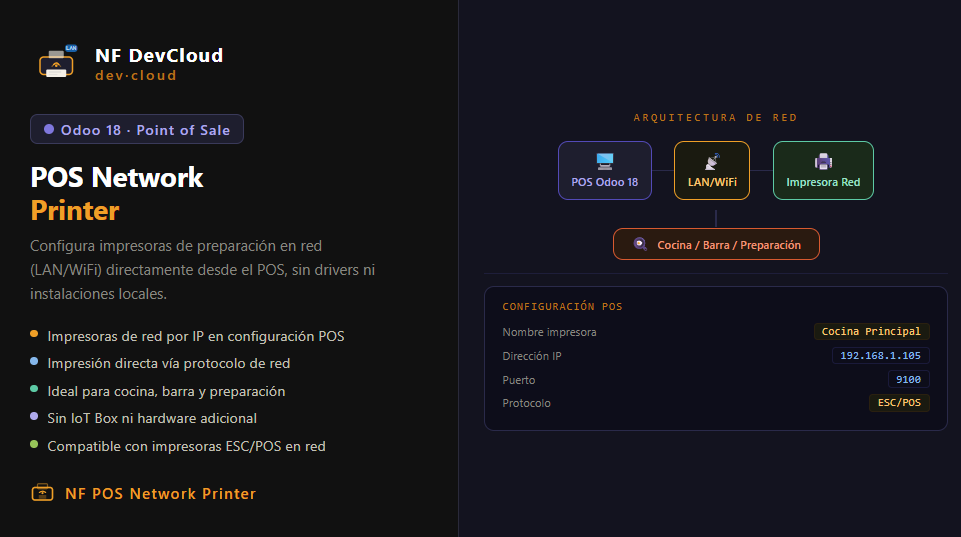

NF POS Network Printer
by Nestor Forero Salas
v18.0 Point of Sale
Configura impresoras de red para la preparación de pedidos en el Punto de Venta.
Envía comandos de impresión directamente a impresoras térmicas via red local.
CARACTERÍSTICAS
Configuración de impresoras de red (IP + Puerto) desde el backend de Odoo.
Impresión automática de preparación al confirmar orden en POS.
Compatible con impresoras ESC/POS de red (cocina, barra, preparación).
Sin necesidad de instalar drivers — funciona 100% via red TCP/IP.